ИЛЛЮСТРАЦИЯ И СОВРЕМЕННОЕ ИСКУССТВО
Две вещи несовместимые?
Я считаю так. Хороший художник и высокий профессионал — две большие разницы; в некоторых случаях несовместимые. В наших краях ценится, за общим дефицитом, профессионализм, в не наших — скорее наоборот. Пропасть между т.н. «современным искусством» и иллюстрацией, живым прикладным рисованием тут смог перешагнуть, кажется, один Тишков, но он так и остался по ту сторону.
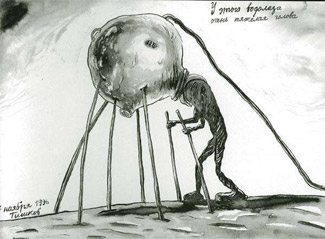
Тогда как если перечислить навскидку десяток зарубежных властителей иллюстраторских дум, половине из нас непременно придут в голову Гери Бейзман
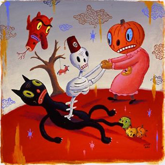
и, скажем, Тим Бискуп, Хуан Миро наших дней,
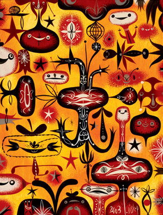
которых иллюстраторами можно назвать разве что с большой натяжкой. Это большие галерейные звезды, позволяющие себе засветиться в журнальной иллюстрации, в рекламе или на обложке CD.
На первый взгляд непонятно, как этим людям удается работать в журналах там — для журнальной графики это слишком (в хорошем смысле) невменяемо. Однако тут действует обратная связь: иллюстрация востребованного и узнаваемого галерейного художника любому журналу сделает честь (не знаю, кстати, отчего местные звезды современного искусства не снисходят до иллюстрации. Конечно, мало кто из них занимается собственно рисованием, но это не должно бы быть проблемой. Мало денег, наверное, дают).
То есть упомянутая выше пропасть отсутствует вовсе, или, по крайней мере те, у кого ноги подлиннее, шастают свободно туда — сюда. Хочешь — иллюстрация, хочешь — современное искусство, а иной раз и не разберешь, где что. Строго говоря, виниловые игрушки, которыми торгует lunohod-1 — ничто иное, как современная скульптура.
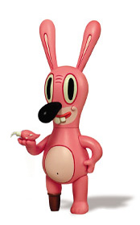
Кроме прочего, у них там существует целая индустрия (сомневаюсь, правда, чтобы прибыльная) независимых журналов вроде Blab! (проект лучшего на свете издательства Fantagraphics), публикующих исключительно независимых художников. До того иногда независимых, что диву даешься.
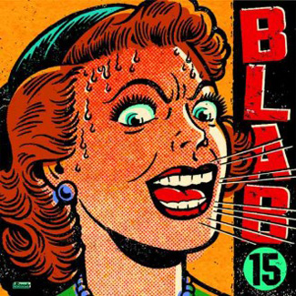
Также вспомним, например, Джо Соррена
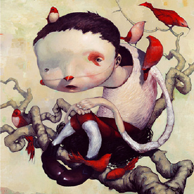
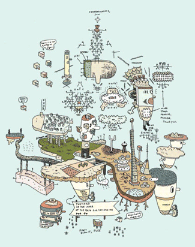
трепетно мной любимого Нейта Уильямса — если не как одного из необыкновеннейших художников, то хотя бы как создателя сайта illustrationmundo, где все вы, надеюсь, бываете ежедневно.
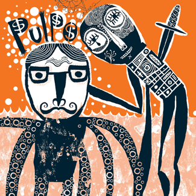
Мощнейшего и совершенно больного на голову комиксиста Дейва Купера, который забросил комикс ради живописи и там тоже всех утер (о нем, кстати, я бы поговорил отдельно).
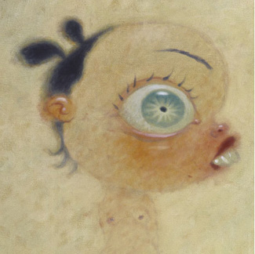
И многих, многих других потрясающих художников, кто столкнулся бы с серьезными трудностями попытавшись, продвинуться на московском иллюстраторском рынке (представьте себе того же Бейзмана читающим список поправок к вот той картине) или наоборот, выставиться в одном из многочисленных выставочных залов. Судя по тому, что ничего подобного здесь не появляется, местных коллекционеров это не интересует (Буду рад, кстати, если меня убедят, что я заблуждаюсь). Впрочем, забыл я про Джима Авиньона, которого давали недавно в одном из клубов (не в галерее, отметим, в непосредственной близи от едящих людей, что, на мой взгляд, довольно неуютно для художника),
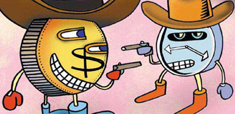
а также про дорогого моего друга Зою Черкасскую, которая пару лет назад привозила в галерею Гельмана своих кукол,
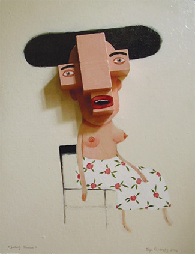
но это, скорее, приятные исключения. Конечно, все дело в конъюнктуре, здесь современным искусством называют скорее что-то такое, а там — и Гери Бейзмана тоже. Шире культурное, что называется, пространство. Мне возразят, что вот мол, иллюстраторы студии Лебедева вывешиваются раз в месяц в Фак-кафе — тут нечем крыть, конечно, но все-таки это не то и не о том.
Иллюстрация, повешенная на стену, остается иллюстрацией, а мне, друзья, остро не хватает дурковатых и оторванных выставок и, собственно, художников. То есть художники-то вот они, только занимаются, на мой взгляд, не тем. Куда ни кинь, попадешь в профессионала. Но есть еще вот какая важная вещь.
Зарубежные иллюстраторы в «свободное время» занимаются рисованием, живописью и лепкой, а мы занимаемся (вынужденно, конечно) дизайном и черт знает чем. Тот же Тим Бискуп, прежде чем стать Тимом Бискупом, четыре года рисовал буквально без перерыва, все, что нарисовал, твердой рукой выбрасывал в мусор и до сих пор, говорят, сохранил привычку рисовать при любых обстоятельствах: за едой, на прогулке, в машине и т.д. Замечательная, кстати, привычка — кроме очевидной пользы для техники, избавляет от желания вылизывать каждую работу до последнего пикселя и трястись над ней, как над первенцем. Вдобавок, аппетит приходит во время еды, а во время рисования чего бы то ни было появляются непременно новые идеи. Highly recommended.
Бискуп, конечно, случай особый, но я бы посмотрел, потянет ли он против нашего выдающегося соотечественника Эдуарда Катыхина — этот, говорят, рисует даже во сне.
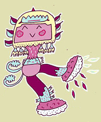